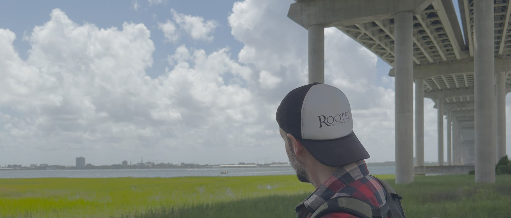

Hi,
I'm Joe.
I'm a software engineer in Charleston. Right now I'm co-creating Amber, an open-source runtime for long-running AI agents. If you want to see more of my work, it's in the links below. Or just email me; I'm always happy to chat!
